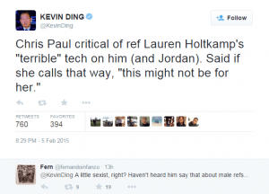
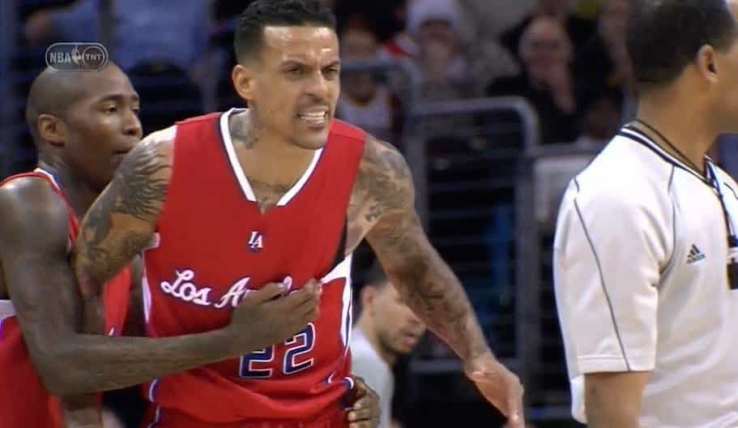
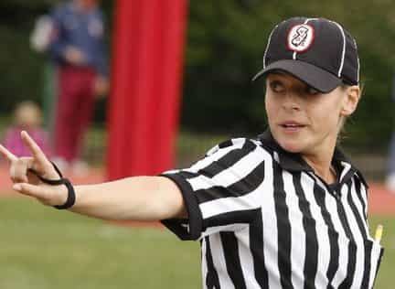

< < < Back
The Chris Paul Story Shows That Women Shouldn’t Be Allowed To Officiate Male Sports – Return Of Kings
Last night Los Angeles Clippers guard Chris Paul criticized female NBA rookie referee Lauren Holtkamp for giving him a technical foul. His was one of of five such fouls (four in the 3rd quarter) dolled out by the referee crew that night, which included the ejection of Matt Barnes.
The Clippers are known for pushing the ball up the court faster than most teams, which is physically taxing on the defending team. It also means the refs have to move a little quicker, too. According to Paul, when he attempted to run their quick-paced offense she said “uh-uh” indicating in some way this was not supposed to be doing. When Paul replied “Why ‘uh-uh?'” she gave him the technical foul.
During his post-game interview he was asked about the situation and provided the following answer:
That tech that I get right there was ridiculous. I don’t care what nobody says, I don’t care what she says; that’s terrible. There’s no way that can be a tech. That’s ridiculous. If that’s the case, this might not be for her.
The Aftermath
Paul’s comments have set off a media firestorm. All morning long this topic has dominated the sports landscape on all mediums. It’s all over ESPN and ESPN. Radio talk show hosts have talked about it ad nauseam.
The issue in debate is whether or not Chris Paul is a sexist which is absolutely ridiculous. The part of his response that sparked this narrative is at the end when he states “this might not be for her.” Pundits claim this is could be a sexist remark because of the pronoun he used. They prefer that his comments not be gender specific so as to not attack the gentle, innocent sex.
Sarah Spain, who now co-hosts a sports radio talk show with another woman, dropped this predictable gem on The Herd this morning:
Would he have made the same comments about a male referee?
Predictably social media has blown up with keyboard gangsters coming to the aid of poor Miss Holtkamp, proving once again that when men are critical of women, even if reasonable, it creates backlash and faux outrage.
Kevin Ding, senior NBA writer for bleacher report, covertly did his part to incite social media outrage. Notice the comment and how many favorites and retweets it’s gotten in less than 24 hours. Think he didn’t know what his tweet would do?
Like he didn’t know what was coming…
Who is Lauren Holtkamp?
Lauren Holtkamp is one of two full-time female NBA referees (there was a third who is now out of the league). She ref’d in the D-League (the NBA’s de facto minor league) for six seasons before being called up before the 2014-2015 season.
This isn’t Holtkamp’s first run-in with the Clippers. Players had issues with her questionable calls during a recent game against the Miami Heat. So there was already something brewing beneath the surface of last night’s game, and being down by 32 at one point in the game, then getting four technical fouls in one quarter was the perfect storm for this to boil over.
How did it get to this point?
This was a frustrating loss to begin with and Holtkamp’s ridiculous calls made matters worse. She called a tech on DeAndre Jordan after he lobbied for a foul after a dunk. Players yell and scream at refs when they feel they deserve a call, but few are assessed a technical foul. Holtkamp decided to buck the trend.
The crew continued their sensitive foul calling when they assessed Matt Barnes his second tech (when a player gets two technical fouls, they are automatically ejected) for saying “Just don’t give them the game” to a teammate who ran into LeBron James a little harder than our gyno-centric referee crew was comfortable with.

Barnes reacts to his untimely ejection
When the smoke cleared, the Clippers had incurred five technical fouls for the game, leaving them frustrated. What’s more is they lost by 11 and have a tough stretching coming up against some good teams. It’s no surprise that Paul called Holtkamp out for her exploits.
What’s the big deal?
The big deal is that controversy was started simply because a female was criticized by a male. Chris Paul was clearly expressing frustration and indicated that her bad calls and overall inexperience may mean she’s just not cut out to be a referee. People claim the only reason this blew up is because he used the pronoun “she,” which is complete bullshit because regardless of how he referred to her SJWs would have connected the dots and figured out he was talking about Holtkamp.

Clipper’s Coach Doc Rivers can’t believe this circus
Players and coaches criticize refs nightly. Most of the time they’re fined by the NBA and life goes on. But now that a precious woman is involved everyone has jumped on the bandwagon making accusations of misogyny. The fact that this is even a story shows the sad state of affairs in professional sports.
Why shouldn’t women be referees?
Estrogen. You see competitive sports on all levels gets intense. In the heat of battle, tempers flare, names are called, and shit gets physical outside of the normal playing rules. Minor scuffles break out all the time in the NBA and the NFL. The officiating crews know and understand that this is what happens when testosterone mixes with adrenaline in a competitive environment.
Cooler heads prevail more often than not (the Malice at the Palace being the one major exception) and outside of a few shoves and some foul language, referees generally refrain from imposing any sort of penalty.
Women are governed by their emotions. So when things heat up on the playing field and things get rowdy they go to their default programming which is make the call based on feelings. Thursday night was the perfect example of this. The Clippers were frustrated due to being blown out, but Holtkamp made it worse by unleashing her hair trigger finger with all of her terrible calls because she simply couldn’t handle the gravity of the situation.

The bottom line is she cracked under pressure and tried to mitigate the damage by projecting it onto the players by making bad calls. And if you think this going to be an isolated event, think again. All women are like that. Period.
Plus, when things do escalate physically referees step in to separate the players. You think a female is strong enough to stop a 6’6″ 230 lb power forward from accosting another player?
Then there’s the issue regarding personal vendettas. Yes, men hold grudges from time to time, but females take them to their graves. Piss them off one time and you’re on their shit list for life. There’s no way Holtkamp doesn’t hold this against Paul, and I’d bet the farm that other female officials act on long standing quarrels with players and coaches on the regular.
In the end…
…this is about the relentless pursuit of the infiltration into a male sphere by women. Female referees, female sports pundits, women’s causes and every other vagina-motivated agendas are becoming more prominent by the day. This fiasco is further proof that sports on all levels will eventually be eroded by women and their white knight betas.
This is yet another feather in the feminist cap. Sooner or later sports will be completely infested by females rendering professional sports in this country just about unwatchable in every way.
Read Next: How White Knighting Is Killing The NFL


{kind=link}